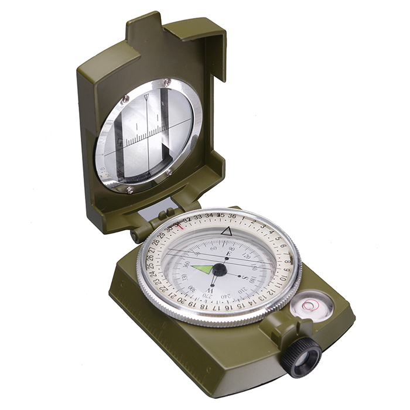

Магнитный жидкостный компас с визиром и прицельной нитью.
Зеленый.
186
-Компас.
-Чехол.
- Алюминиевый корпус.
- Быстрая стабилизация магнитной стрелки.
- Светящийся в темноте циферблат.
- Визир.
- Азимуты нанесены на шкалу в двух направлениях.
- Угломерная шкала.
- Пузырьковый уровень.
- Резьба под 1/4'' штатив.
- Таблица формулы на задней крышке.
Военный компас для высокоточного ориентирования на суше и воде. Компас жидкостной – магнитная стрелка помещена в специальную жидкость, которая быстро возвращает ее в равновесное состояние. Лимб плавающий, дисковый. Все обозначения нанесены на циферблат специальной светящейся в темноте краской. Циферблат имеет две шкалы измерений: в милах и градусах. Цена деления 5° и 40 милов, соответственно. Корпус компаса изготовлен из металла, на торце есть небольшая линейка в 5 см для оценки расстояния по картам. В верхней части находится пузырьковый уровень, что облегчает выравнивание навигационного прибора. Компас снабжен крышкой, в окошке размещена угломерная шкала. Формулы для определения расстояний приведены на задней стороне корпуса.
Компас можно устанавливать на стандартный штатив 1/4''.